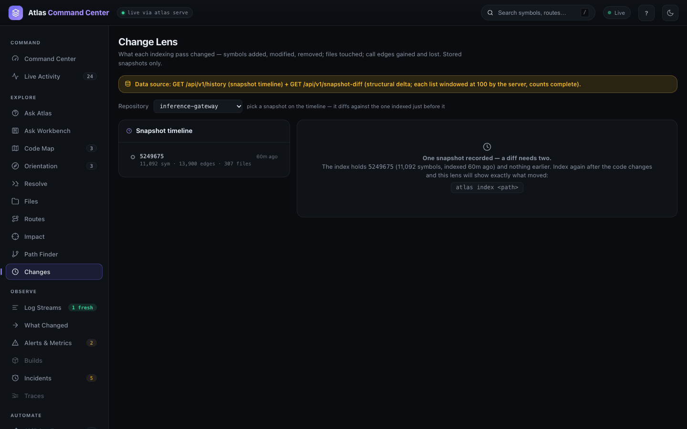
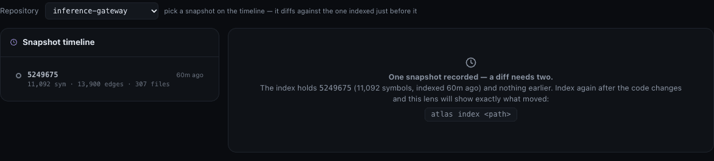
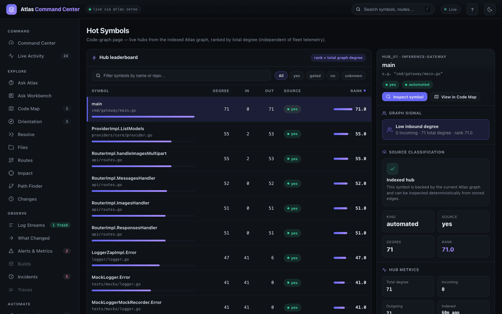
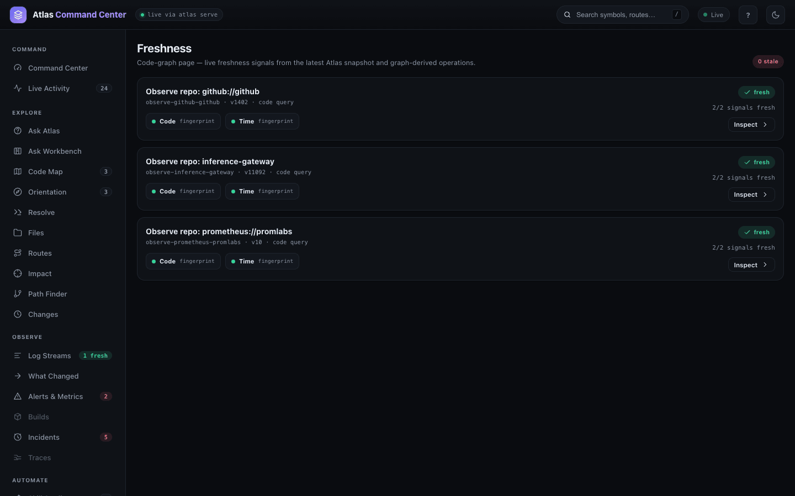
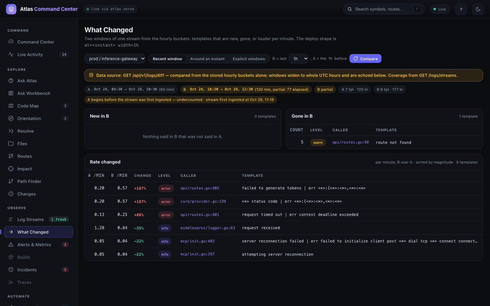

Change lens and history
Every indexing pass stores a snapshot: the files, symbols, call edges and routes of a repository at one commit. History is what you read from those snapshots — what a pass added, changed and removed, which symbols carry the most weight, and whether the index still matches the code. With logs connected, the same idea applies to a running service: what it started or stopped saying between two windows. Reach for it after a merge, before a release, or when an answer and the code seem to disagree.
Open It
The views live in three places in the dashboard's navigation:
- Changes in EXPLORE (
#/changes) — the Change Lens: the snapshot timeline and what each pass changed. - Hot Symbols (
#/hot) and Freshness (#/staleness) in CODEBASE — the graph's hubs and the freshness of what Atlas derives from the latest snapshot. - What Changed in OBSERVE (
#/diff) — two windows of one log stream compared. OBSERVE appears once Loki or Elasticsearch is configured.

From a terminal, atlas history prints the same timeline:
atlas history --format plainhistory inference-gateway snapshots 1
52496750 e842033e-41d6-4e7a-9e27-7415bc5edcbc files 307 symbols 11092 edges 13900 2026-10-28T05:16:55ZSee What an Indexing Pass Changed
- Open Changes and choose the Repository.
- The Snapshot timeline lists every stored snapshot, newest first: the short commit, its symbol, edge and file counts, and its age.
- Pick a snapshot. The lens compares it with the snapshot indexed just before it and answers "what did this pass change?": a count verdict first, then Added symbols, Modified symbols, Removed symbols, the changed files, and Added call edges and Removed call edges.
Added and modified symbols open the Symbol Inspector; removed ones do not, because they no longer exist in the newer snapshot. Changed files open in Files. The server sends at most 100 rows per list, while the counts are always complete, so a long list says "first 100 of N". The address keeps the pick (#/changes?repo=<repo>&to=<snapshot>).

The demo store holds a single snapshot (commit 5249675, 11,092 symbols), so the lens shows its empty state. History grows by indexing again once the code has moved — after a pull, a merge or a checkout of another commit:
git pull
atlas index .Each pass at a new commit stores another snapshot, and the lens then diffs it against the one before. Retention keeps the newest 5 snapshots per repository by default (ATLAS_MAX_SNAPSHOTS_PER_REPO); the current one is never deleted. See Indexing and reindexing.
Compare Two Snapshots from the CLI
atlas snapshot-diff (alias atlas diff) gives the same structural delta in a terminal: symbols and edges added, removed and modified. --to defaults to the latest snapshot and --from to the one before it; both take a commit sha (a prefix is enough) or a snapshot id.
atlas snapshot-diff --format plainatlas: need two snapshots to diff — index the repo at two commits, or pass --fromThat is the real answer on a store with one snapshot. --from names the base explicitly; pointed at the one stored snapshot it compares the snapshot with itself, which shows the shape of an answer with every count at zero:
atlas snapshot-diff --from 5249675{
"from_commit": "524967508e9d90185c4a1c3540cac0dcda7c580a",
"to_commit": "524967508e9d90185c4a1c3540cac0dcda7c580a",
"added_count": 0,
"removed_count": 0,
"modified_count": 0,
"added_symbols": [],
"removed_symbols": [],
"modified_symbols": [],
"changed_files": [],
"added_edges": [],
"removed_edges": []
}atlas snapshots list shows what history is costing on disk — one row per stored snapshot with its counts, and the retention policy:
atlas snapshots list{
"repositories": [
{
"repo_full_name": "inference-gateway",
"snapshot_count": 1,
"snapshots": [
{ "commit_sha": "524967508e9d90185c4a1c3540cac0dcda7c580a",
"created_at": "2026-10-28T05:16:55Z",
"file_count": 307, "symbol_count": 11092, "edge_count": 13900,
"route_count": 71, "current": true }
]
}
],
"retention": { "max_snapshots_per_repo": 5, "max_total_bytes": 5368709120, "max_age": "disabled" }
}atlas snapshots prune --dry-run prints exactly what a prune would delete without touching anything; --keep N and --keep-since 90d override the policy for one run.
Snapshots of Uncommitted Work
Since 0.1.55, indexing a working tree with uncommitted edits or untracked files stores a snapshot of its own, labelled <sha>+dirty, beside the clean snapshot of that commit (#65). The timeline lists both, and snapshot-diff compares them: --from and --to accept <sha>+dirty as well as a commit sha or a snapshot id. On a small repository after adding one function without committing it:
$ atlas history --format plain
history repo snapshots 2
4fb9d0f7+dirty e0596478-… files 2 symbols 4 edges 3 2026-10-29T05:18:49Z
4fb9d0f7 777a3e52-… files 2 symbols 3 edges 3 2026-10-29T05:18:35Z
$ atlas snapshot-diff --format plain
snapshot_diff 4fb9d0f7 -> 4fb9d0f7+dirty +1 -0 ~0 files 1
added(1) extra
files(1) main.goIn snapshots list the dirty row carries dirty: true and its tree_hash. A newer dirty state of the same commit retires the one before it, so edit churn never pushes commit history out of the per-repository cap, and committing the work stores the new commit's snapshot.
Find the Symbols That Carry the Most Weight
Hot Symbols ranks the graph's hubs by total degree — the calls in plus the calls out. A hub is where a change spreads: a symbol many others call, or one that calls many others.

- DEGREE, IN and OUT are counted from stored edges; RANK orders the board. Click a column head to sort.
- The filter box narrows by symbol name or repository; the chips filter by the SOURCE column (every hub on the demo reads yes: backed by the current graph).
- The rail on the right describes the selected hub — its graph signal ("Low inbound degree" for
main), kind, degree and rank — with Inspect symbol and View in Code Map.
atlas hubs --format plainhubs total 20
main function in 0 out 71 total 71 cmd/gateway/main.go
ProviderImpl.ListModels method in 2 out 53 total 55 providers/core/provider.go
RouterImpl.handleImagesMultipart method in 2 out 53 total 55 api/routes.go
RouterImpl.MessagesHandler method in 0 out 52 total 52 api/routes.go
LoggerZapImpl.Error method in 41 out 6 total 47 logger/logger.go
…Since 0.1.55 a hub needs at least one resolved call or inheritance relation: the header adds eligible and excluded_isolated, and on a sparse graph the list is shorter than the limit rather than padded with symbols nothing calls (#45).
Check How Fresh the Index Is
Freshness lists the operations Atlas derives from the latest snapshot — on the demo, one Observe repo card per indexed repository — and checks each against two signals: Code (the snapshot it was built from is still the one loaded) and Time (when that snapshot was indexed). Hover a signal for its detail. A card whose signals all hold reads fresh; the badge at the top counts the stale ones. Inspect opens the operation.

When the code moves on and the index does not, re-index: atlas index . brings the snapshot, and with it every derived operation, up to date. Indexing and reindexing covers watching a repository so this happens on every change.
The answers themselves say how fresh they are too. Since 0.1.55 every lookup carries indexed_sha, head_sha, dirty and stale, and a plain answer opens with a stale: line when the checkout has moved past the snapshot that answered — see Search and Ask (#59).
See What a Service Started or Stopped Saying
What Changed compares two windows of one log stream from its hourly counts: templates New in B, Gone in B, and Rate changed per minute, biggest move first. Each row names the line of code that emits the template in CALLER. Choose the stream, then one shape: Recent window (the last 1–24 h against the same length before), Around an instant (either side of a deploy) or Explicit windows, and press Compare.

Windows widen to whole UTC hours and are echoed back; a window still running is marked partial and its rates use the minutes elapsed, and a window that starts before the stream was first ingested is flagged as undercounted. The same comparison from a terminal:
atlas logs diff --stream inference-gateway --scope prod --window 1h --format plainstream inference-gateway scope prod limit 20 new 0 of 0 gone 1 of 1 changed 6 of 6
WINDOW FROM TO MINUTES TEMPLATES LINES
a 2026-10-28T04:00:00Z 2026-10-28T05:00:00Z 60 7 120
b 2026-10-28T05:00:00Z 2026-10-28T07:00:00Z 75.88 of 120 (partial) 6 177
LIST COUNT_A COUNT_B CHANGE SEVERITY CALLER SKELETON
gone 5 0 -100% warn api/routes.go:98 route not found
changed 12 44 +190% error api/routes.go:805 failed to generate tokens | err <*>:{<*>:<*>,<*>:<*>
…Connecting a log source and the other Observe views are covered in Observe.
From the API
| Route | Answers |
|---|---|
GET /api/v1/history?repo=<repo> | The snapshot timeline |
GET /api/v1/snapshot-diff?repo=<repo>&from=<sha> | The structural delta; 422 with the "need two snapshots" detail when there is only one |
GET /api/v1/logs/diff | The two-window comparison What Changed draws |
An assistant reads the timeline over MCP with the history tool (MCP tools). Every command and flag is in the CLI reference; the service is described in Dashboard and API.
Related
- Indexing and reindexing — how snapshots are made and kept current.
- Impact and review — what a change you are about to make will reach.
- Code Map and graph — open a hub and walk its neighbourhood.
- Observe — log streams, incidents, alerts, builds and traces.